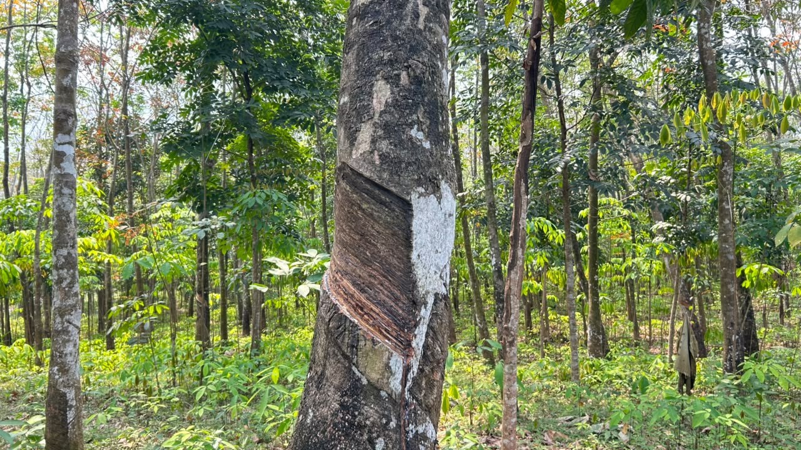
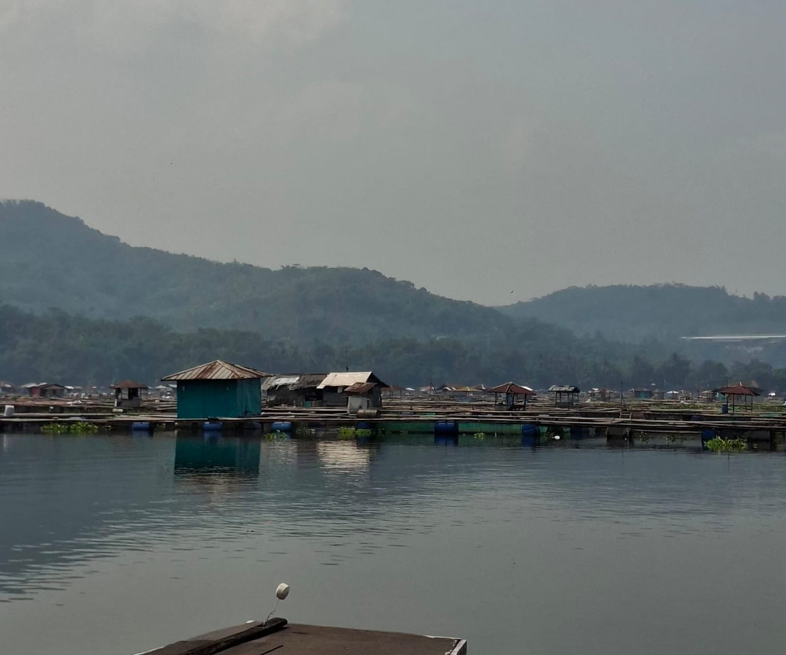
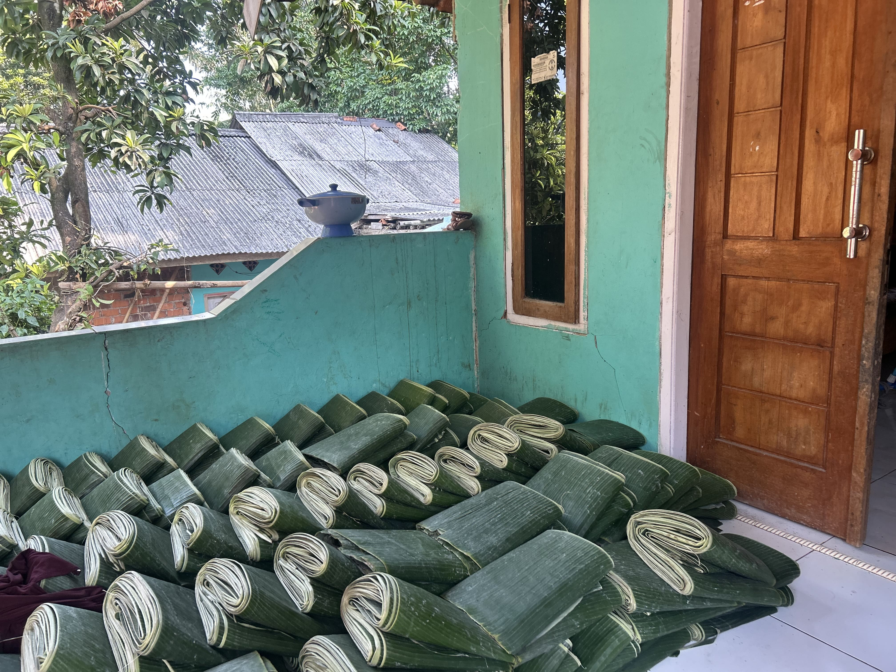
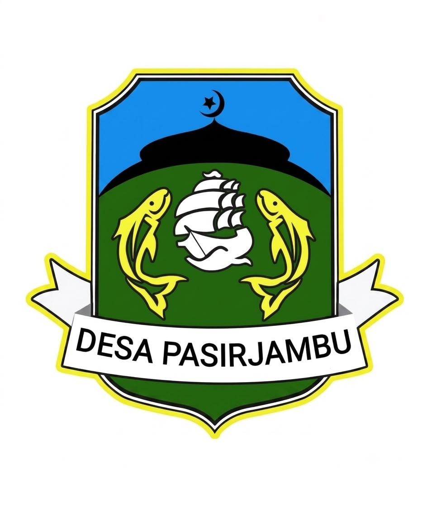

Selamat datang di E-Katalog UMKM Desa Pasirjambu. Website ini berisi informasi mengenai produk dan usaha masyarakat Desa Pasirjambu sebagai upaya mendukung promosi dan pengembangan ekonomi desa.
Peta interaktif titik lokasi UMKM di Desa Pasirjambu.
Ringkasan jumlah usaha yang tercatat berdasarkan jenisnya.
Sebagian usaha yang terdaftar di Desa Pasirjambu.
Telusuri seluruh UMKM Desa Pasirjambu berdasarkan nama atau jenis usaha.
Mengenal berbagai sektor rintisan menjanjikan yang memiliki peluang besar untuk dikembangkan menjadi motor penggerak ekonomi Desa Pasirjambu ke depannya.
Ketiga sektor di bawah ini sedang ditekuni oleh sebagian warga dan menunjukkan potensi keuntungan yang sangat baik jika didukung dengan skala yang lebih besar.

Keberadaan perkebunan karet di Desa Pasirjambu merupakan potensi ekonomi yang dapat dikembangkan melalui peningkatan pengelolaan kebun, penguatan kapasitas kelompok tani, serta pengolahan hasil karet menjadi produk bernilai tambah sehingga dapat meningkatkan nilai ekonomi bagi masyarakat.

Sektor perikanan budidaya melalui tambak ikan merupakan salah satu potensi ekonomi utama di Desa Pasirjambu. Dengan jumlah pelaku usaha yang cukup banyak, sektor ini memiliki peluang untuk terus dikembangkan melalui peningkatan kualitas hasil budidaya, penguatan pengelolaan pascapanen, serta perluasan akses pasar hingga ke tingkat nasional maupun internasional.

Sering dipandang sebelah mata, daun pisang dari Desa Pasirjambu rupanya memiliki permintaan tinggi. Ini adalah peluang bisnis yang ramah lingkungan dengan pasar yang terus hidup, terutama untuk industri kuliner tradisional.
Mengenal lebih dekat Desa Pasirjambu, Kecamatan Maniis, Kabupaten Purwakarta.
Desa Pasirjambu adalah desa potensial yang secara administratif berada di wilayah Kecamatan Maniis, Kabupaten Purwakarta, Provinsi Jawa Barat.
Di bawah kepemimpinan Kepala Desa Bapak Nendang, A.Md.,
desa ini terus berkembang pesat dengan total populasi penduduk mencapai 4.422 jiwa.
Masyarakat Desa Pasirjambu dikenal memiliki etos kerja yang tinggi, dengan roda ekonomi yang banyak digerakkan oleh sektor perikanan dan pertanian.
Tercatat ratusan warga menggantungkan hidupnya dari kekayaan alam, baik sebagai nelayan, petani, maupun pemilik usaha perikanan. Selain itu,
denyut ekonomi desa juga didukung kuat oleh industri kecil rumahan seperti produsen kue tradisional, perajin kayu, hingga penjahit. Kolaborasi berbagai profesi inilah yang menjadi cikal bakal lahirnya puluhan UMKM kreatif di Desa Pasirjambu.
